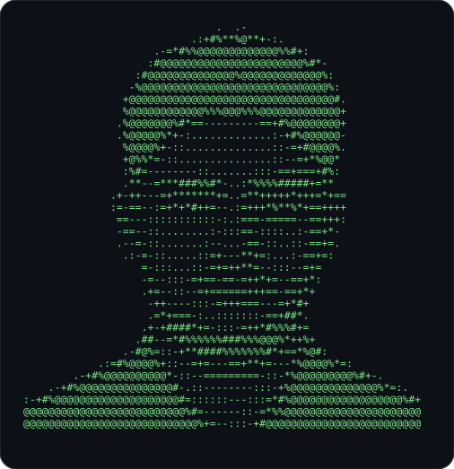

Networks
Used inEnterprise Infrastructure LabEnterprise Network Design
Computer Engineering Student · Kadir Has University
Right now I’m learning computer networks
Fourth-year student in Istanbul. I learn a topic, then build something with it: network labs on real switches, small IoT devices and web software.

01About
I study Computer Engineering at Kadir Has University in Istanbul. Right now I’m going deep into computer networks: I learn a topic, then build something with it, from a Cisco design in Packet Tracer to a working lab with real switches and servers.
I spent March to September 2026 on an Erasmus+ exchange at Hochschule Ravensburg-Weingarten, studying Computer Science (Informatik) and taking German courses. I work comfortably in English and I’m learning German.
Cybersecurity is the area I’m most curious about, and networking and cybersecurity are the directions I’d like to build a career in. I also enjoy software, web development and small embedded projects, so I keep moving between code, networks and devices.
02Toolkit
03Experience
Two internships, each one a different side of the same field.
What I learnedHands-on practice with real switches, access points and VLANs, and how network problems are found and fixed on real equipment. It also showed me how infrastructure, web work and embedded devices come together inside one company.
What I learnedHow enterprise software is written and debugged inside SAP environments, and how it connects to business processes and everyday development workflows.
04Education
From Istanbul to Germany and back.
Istanbul · 2022 to now
Bachelor of Science in Computer Engineering. Fourth-year student.
Germany · March to September 2026
Erasmus+ exchange in Informatik (Computer Science).
Istanbul
Bringing the exchange year into the labs, projects and internships on this page.
05Projects
Things I built to practise what the sections above describe: networking, software and small devices.
A physical enterprise-style network I built to move beyond simulation: a managed Layer 3 switch, three Raspberry Pi servers, hand-terminated cabling and real client devices.
Repository and configuration filesPhysical layer
UTP preparation, RJ45 termination, crimping and continuity tests came before any configuration.
Network layer
The Aruba 2930F JL256A routes between Clients, Management and Servers. DHCP relay carries client requests across the VLAN boundary.
Services
ISC DHCP serves the wired client scope. BIND9 answers for the internal lab.home.arpa zone, and Nginx hosts a custom dashboard at web.lab.home.arpa.
Validation
A Windows laptop on VLAN 10 received 192.168.10.50 through DHCP relay. A MacBook administered the switch from the management VLAN.
Where a web application meets a sensor.
Repository and demo videosUsers sign in with session-based authentication and bcrypt password checks, then reach a Control Center, a calendar and the Smart Room module. The server reads JSON from the Arduino over USB serial, exposes it at /api/sensor, retries the connection if it drops, and stores data in MySQL.
Node.js, Express, MySQL, express-session, bcryptjs, SerialPort, Arduino, dotenv. Still in development, not a finished product.
A simulated company split into IT, Human Resources, Finance and Sales, with Cisco 2911 routers and 2960 switches. The repository includes the exported router and switch configurations, so the design is documented and not only drawn.
Repository and exported configurationsA Flask dashboard for a Raspberry Pi mirror. Mock and raspberrypi modes let me build and test away from the device.
The repository has no screenshots yet, so none are shown.
RepositoryA project that shows where I started and how far I have come.
My first-year university project: a terminal-based N-Queens program in C.
Revisited and rebuilt as a graphical desktop game in C++ with SFML 2.6 and CMake: an 8×8 board, mouse placement, Easy and Hard modes, conflict detection and attacked-square display in Easy Mode.
06GitHub
Every project on this page has a public repository with its source, configuration files or demo material.

@BatuhanCakmak4 All repositories, configurations and work in progress. Open profile physical-raspberryPi-network-lab Enterprise Infrastructure Lab: VLANs, Layer 3 routing, DHCP relay, BIND9 and Nginx on real hardware. han37-personal-iot-platform HAN37: a web application that reads an Arduino sensor over USB serial. enterprise-network-packet-tracer Enterprise Network Design with exported router and switch configurations. smart-mirror-pi Smart Mirror: a Flask dashboard with weather, Spotify and calendar. nQueens-game N-Queens: rebuilt from a C terminal program into a C++ desktop game.07Contact
Questions about a project, an internship or anything on this page: email is the fastest way to reach me.